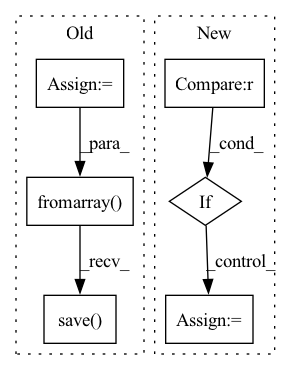

Pattern ID :21005
Before Change
img_stack = img_stack.mean(axis=0)
// Normalize back to 0-255
img_stack = img_stack * 255
Image.fromarray(img_stack).convert("L").save( f"{data_dir}{dir_name}/merged/{new_filename}")
if __name__ == "__main__":After Change
for i in range(len(filenames)):
img = load_image(paths[i] + "/" + filenames[i])
img = img/img.max()
if type(img_stack) == type(None) :
img_stack = img
else:
img_stack = np.vstack([img_stack, img])
In pattern: SUPERPATTERN
Frequency: 3
Non-data size: 6
Instances Fragment ID: 67600359
Project Name: stan-hua/cytoimagenet
Commit Name: 8fd9a8300cb96673368487f145a26d96c4a49d22
Time: 2021-06-16
Author: stanley.hua@mail.utoronto.ca
File Name: scripts/preprocessor.py
M Class Name: AnonimousClass
N Class Name: AnonimousClass
M Method Name: merger(3)
N Method Name: merger(3)
M Parent Class:
N Parent Class:
M File Name: scripts/preprocessor.py
N File Name: scripts/preprocessor.py
M Start Line: 42
M End Line: 60
N Start Line: 50
N End Line: 62
Before Change
img_stack = None
for i in range(len(filenames)):
if img_stack is None:
img_stack = bf.load_image(paths[i] + "/" + filenames[i])
// Normalize Intensity
img_stack = img_stack/img_stack.max()
else:
img = bf.load_image(paths[i] + "/" + filenames[i])
// Normalize Intensity by dividing by max
img = img/img.max()
img_stack = np.vstack([img_stack, img])
// Average along stack
img_stack = img_stack.mean(axis=0)
// Normalize back to 0-255
img_stack = img_stack * 255
Image.fromarray(img_stack).convert("L").save( f"{data_dir}{dir_name}/merged/{new_filename}")
if __name__ == "__main__":After Change
for i in range(len(filenames)):
img = load_image(paths[i] + "/" + filenames[i])
img = img/img.max()
if type(img_stack) == type(None) :
img_stack = img
else:
img_stack = np.vstack([img_stack, img])
Fragment ID: 67600356
Project Name: stan-hua/cytoimagenet
Commit Name: 8fd9a8300cb96673368487f145a26d96c4a49d22
Time: 2021-06-16
Author: stanley.hua@mail.utoronto.ca
File Name: scripts/preprocessor_2.py
M Class Name: AnonimousClass
N Class Name: AnonimousClass
M Method Name: merger(3)
N Method Name: merger(3)
M Parent Class:
N Parent Class:
M File Name: scripts/preprocessor_2.py
N File Name: scripts/preprocessor_2.py
M Start Line: 42
M End Line: 60
N Start Line: 49
N End Line: 61
Before Change
mask = m_img == 0
mask_inv = m_img == 255
s_img_inv[mask_inv] = c_img[mask_inv]
s_img[mask] = c_img[mask]
out_path = os.path.join(dump_path_bkg_masked, "combined_" + str(cnt).zfill(4) + format)
out_path_inv = os.path.join(dump_path_person_masked, "combined_" + str(cnt).zfill(4) + format)
// print(out_path)
img = Image.fromarray(s_img)
img.save(out_path)
img_inv = Image.fromarray( s_img_inv)
img_inv.save( out_path_inv)
// plt.imshow(s_img)
// plt.show()
print("Done making background pics.")After Change
os.makedirs(dump_path_person_masked, exist_ok=True)
// if other_stylized_frames_path exists overlay frames are differently styled frames and not original frames
if other_stylized_frames_dir is not None :
overlay_frames_dir = other_stylized_frames_dir
else:
overlay_frames_dir = frames_dir
if len(os.listdir(dump_path_bkg_masked)) == 0 and len(os.listdir(dump_path_person_masked)) == 0:
for cnt, (name1, name2, name3) in enumerate(zip(os.listdir(stylized_frames_dir), os.listdir(mask_frames_dir), os.listdir(overlay_frames_dir))): Fragment ID: 67600353
Project Name: gordicaleksa/pytorch-naive-video-neural-style-transfer
Commit Name: eb258a320653c1198a40fb422c98f1f37212c8cc
Time: 2020-08-03
Author: gordicaleksa@gmail.com
File Name: segmentation.py
M Class Name: AnonimousClass
N Class Name: AnonimousClass
M Method Name: stylized_frames_mask_combiner(3)
N Method Name: stylized_frames_mask_combiner(3)
M Parent Class:
N Parent Class:
M File Name: segmentation.py
N File Name: segmentation.py
M Start Line: 108
M End Line: 150
N Start Line: 109
N End Line: 156